Archived note, written in 2017, while I was a research assistant at FOSSEE, IIT Bombay. Tools and versions have moved on since.
Setting up environment
Setting up 4DIAC-IDE on Linux Machine
-
Extract the tarball
tar -xzvf filename
-
Go to extracted folder and you may execute the IDE
./4DIAC-IDE
The application requires Java 8 or higher. If not installed try the following commands
sudo add-apt-repository ppa:webupd8team/java sudo apt update sudo apt install oracle-java8-installer
Accept EULA and install.To know version, typejavac -version
Setting up 4DIAC on a Linux machine is a straightforward task.Latest IDE is available in 4DIAC Downloads page.
Forte on Raspberry Pi
Forte is a real time capable Runtime Environment for IEC 61499 compliant applications.We will use Forte to run applications on an Embedded resource for applications developed on 4DIAC.Forte can be run on embedded resources such as Raspberry Pi, Beagle Bone and other Linux SBC. For installing Forte on RPi, you can try the official documentation. Procedures for compiling and cross compiling Forte are mentioned in the page.Compiling should work in all Rpi Boards but it takes over 45 Minutes on a Pi Zero board hence its advised to do a cross compilation and download the executable files to RPi via SFTP/SCP/FISH. For cross compilation you may follow the following procedure since the one mentioned in official documentation did not work on Pi Zero.I have tested the executable on Pi Zero and Pi 3, it should work.
git clone https://git.eclipse.org/r/4diac/org.eclipse.4diac.forte
sudo apt-get install cmake
Make sure that name of directories in the path does not contain blank spaces.

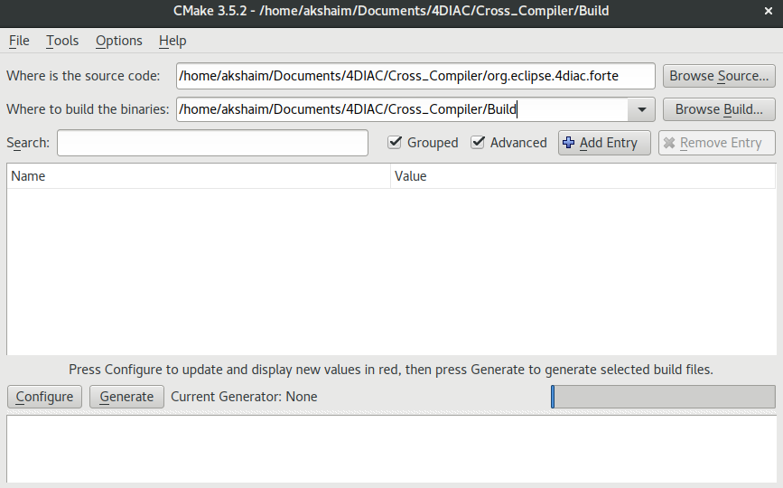

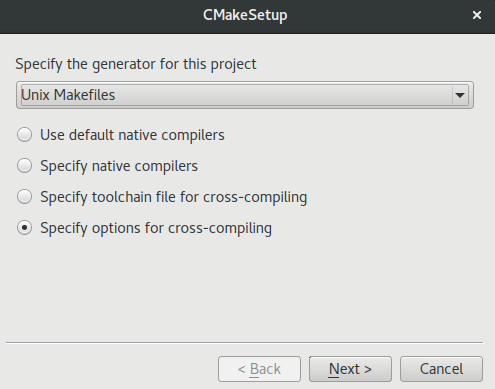

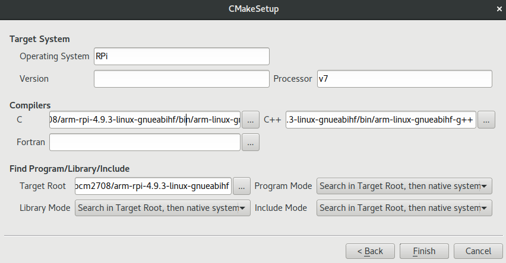
I had used official toolchain from RPi foundation.You may clone the same.git clone https://github.com/raspberrypi/toolsIn the cloned folder select arm-linux-gnueabihf-gcc and arm-linux-gnueabihf-g++ for C and C++ respectively which are located in tools/arm-bcm2708/arm-rpi-4.9.3-linux-gnueabihf/bin/. Target root may be pointed to arm-rpi-4.9.3-linux-gnueabihf folder.

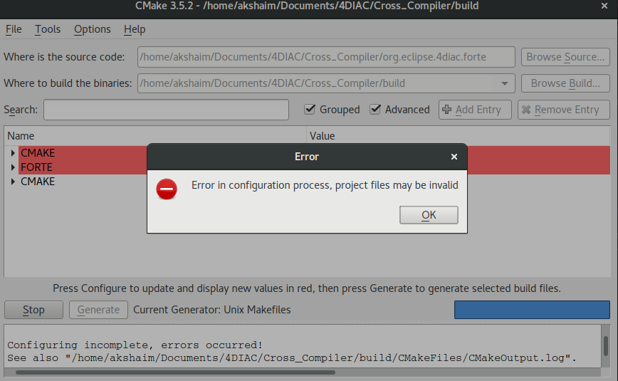

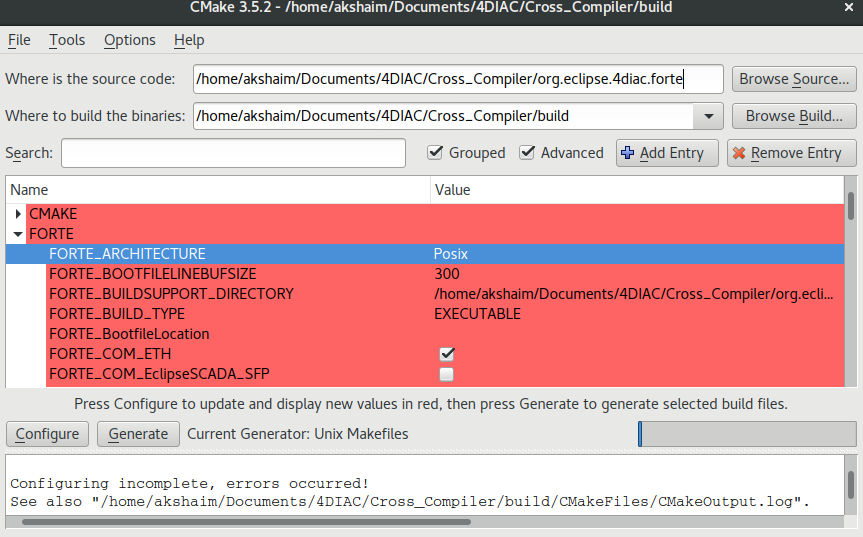

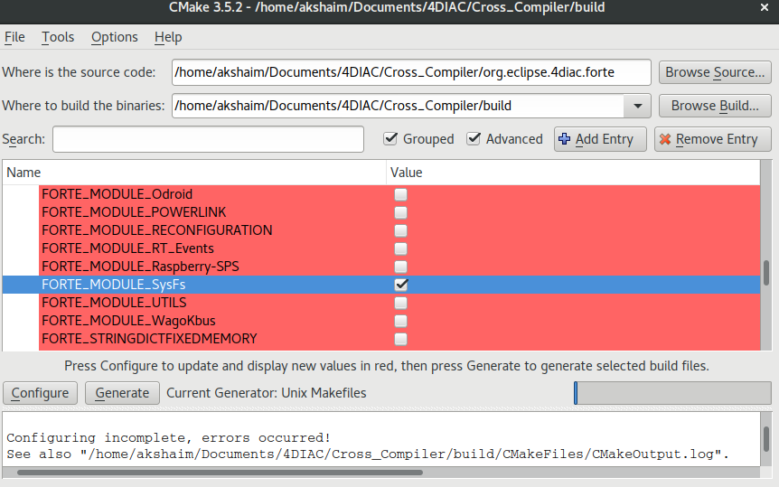
If you made an inappropriate selection in any of the above procedures listed above, delete cache,configure and repeat the process.
make
scp forte pi@local_ip_address:~Then enter password.This will copy forte to home folder(~) of machine(RPi) with "local_ip_address".
You can also use Filezilla, give IP address, username, password of Pi and 22 (SFTP) as port number.
cd src sudo ./forte
Forte will start and wait for 4DIAC to download application to it.If no message is shown in terminal, it means forte is up and working properly.
You may refer SSH tutorial to access RPi shell remotely on a network.
4DIAC IDE
4DIAC-IDE offers five different perspectives.To view each you may click on the open perspectives. 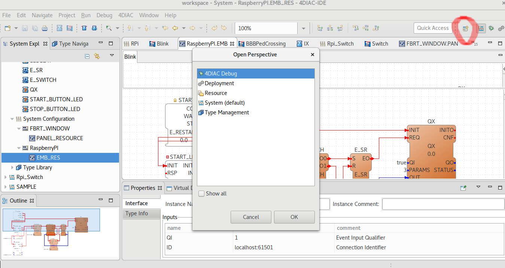

Ensure that workspace is set to default workspace in 4DIAC application folder to view existing examples.

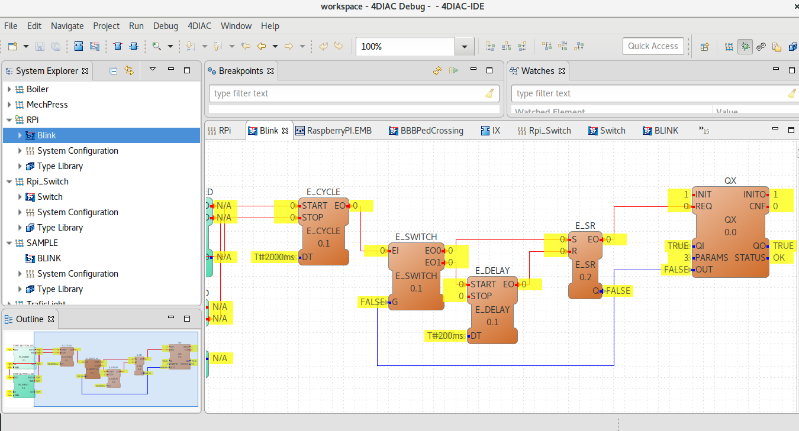

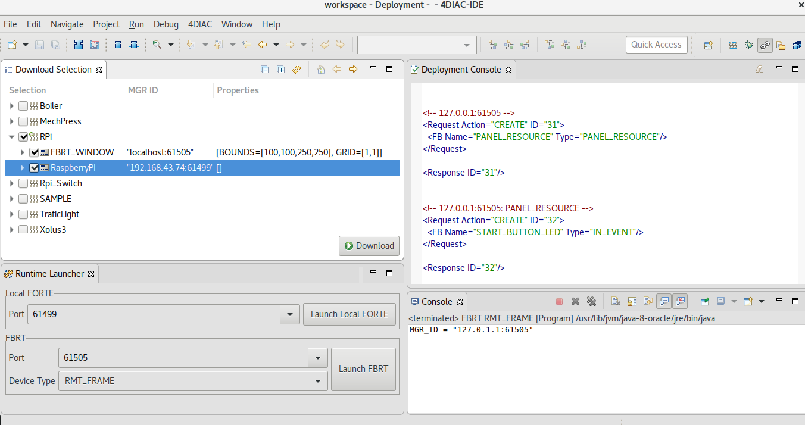

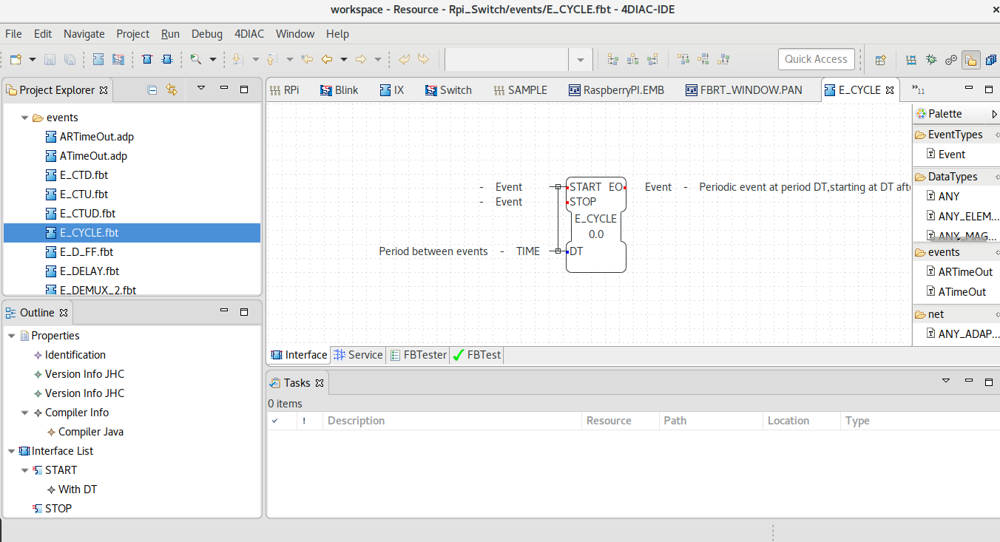

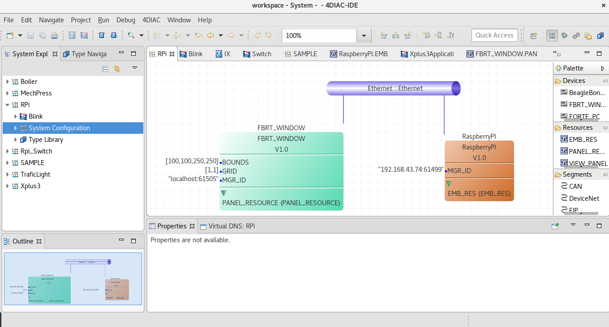

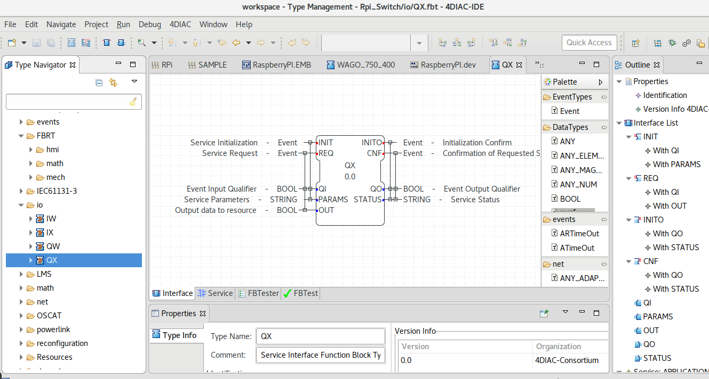
We will learn more on 4DIAC perspectives and IDE usage in next chapter